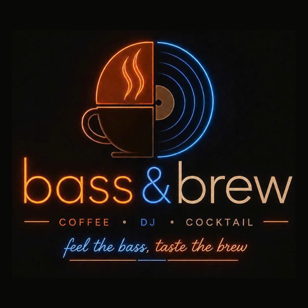

👑 QUẢN TRỊ CHỦ QUÁN — CỔNG CỐ ĐỊNH 0Đ
🔄 Đang tìm máy chủ Bass & Brew...
Tự động nối tới đường truyền mới nhất của máy chủ — xem đồ thị thống kê & chuyển nhanh Order / Bar trên 1 máy.
👑 Vào Trang Quản Trị & Đồ Thị ngay
📌 Mẹo ghim điện thoại Chủ quán (1 lần dùng mãi mãi):
1. Ngay tại màn hình này (TRƯỚC khi bấm Vào Quản Trị), bấm Chia sẻ (↑) ở đáy Safari.
2. Chọn Thêm vào MH chính (Add to Home Screen).
3. Từ lần sau bấm icon ngoài màn hình sẽ TỰ ĐỘNG vào thẳng Quản Trị, xem đồ thị & chuyển 1 chạm sang Order / Bar!
1. Ngay tại màn hình này (TRƯỚC khi bấm Vào Quản Trị), bấm Chia sẻ (↑) ở đáy Safari.
2. Chọn Thêm vào MH chính (Add to Home Screen).
3. Từ lần sau bấm icon ngoài màn hình sẽ TỰ ĐỘNG vào thẳng Quản Trị, xem đồ thị & chuyển 1 chạm sang Order / Bar!